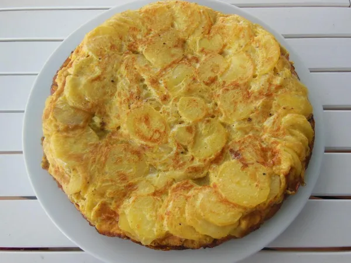

Tortilla de Papa con Queso

Ingredientes:
2 papas
1 cucharadita de sal
100g de queso tipo dambo
2 cucharadas de harina
1 cucharadita de pimentón
1 cucharadita de orégano
1 cucharadita de sal
Preparación:
Cortar las papas en rodajas bien finas. Enjuagarlas bien y escurrir sobre un paño limpio.
En un recipiente hondo con tapa poner las dos cucharadas de harina, la sal, el pimentón y el orégano.
Mezclar todo y agregar las papas.
Cerrar el recipiente y sacudir para que todas las papas se impregnen con la mezcla de harina.
En un sartén que no pegue, con unas gotas de aceite, colocar una tanda de papas.
Cubrir con el queso y completar con el resto de papas.
Con el fuego al mínimo cocinar por 10 minutos con el sartén tapado.
Luego y con cuidado dar vuelta la tortilla con la ayuda de un plato y cocinar por unos minutos más, hasta que las papas estén cocidas.